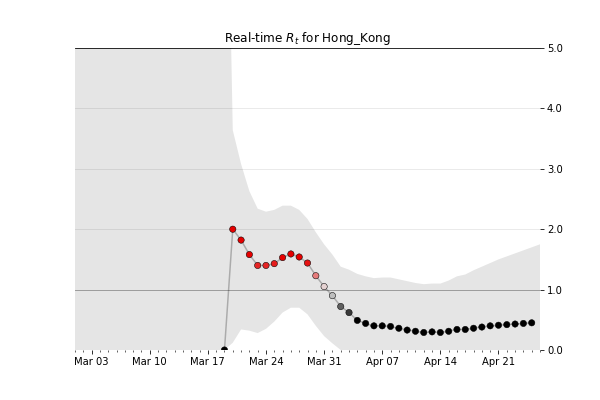
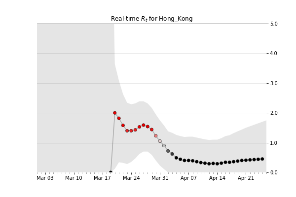
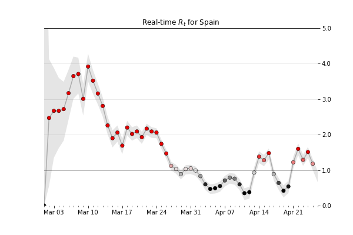
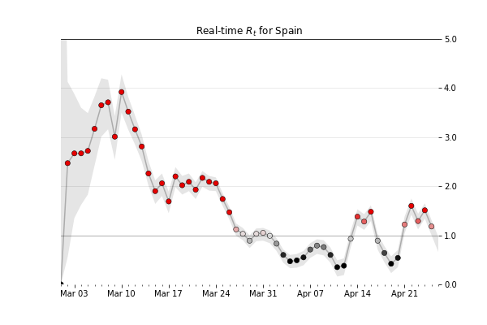

This website is inspired by the great work of the Instagram founders Kevin Systrom and Thomas Vladeck who built a model and a website for Rt for all states in the USA.
These are up-to-date values for Rt, a key measure of how fast the virus is growing. It’s the average number of people who become infected by an infectious person. If Rt is above 1.0, the virus will spread quickly. When Rt is below 1.0, the virus will stop spreading. Learn More.
 

 


Original data analysis by Instagram founders Kevin Systrom and Thomas Vladeck.
Site built with ❤️ by Erik Paskalev - a 14 year old student of Math and CS who mainly wants to find Bularia's Rt and when he can go play 🏀🏀🏀 again!
Visualizations built using d3; site built using good old HTML.